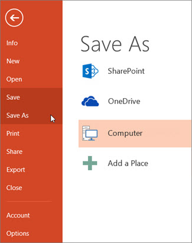

As with any software program, it is a good idea to name and save your presentation immediately, and save your changes frequently while you work.
In PowerPoint 2013 and newer versions, you can save your desktop presentation to your local drive (such as your laptop), a network location, a CD, a DVD, or a flash drive. You can also save it as a different file format.
On the File tab, select Save.

Do of the following:
To save to your local drive, such as your laptop, a flash drive, CD or DVD drive, select Computer.
To save to a SharePoint Library, select SharePoint.
Under Save As > Recent Folders, select Browse, pick a path and file folder, and then name the file.
Select Save.
Note: To save files in PDF (.pdf) or XPS (.xps) file formats.
On the File tab, select Save As.
Under Save As, do one of the following:
Under Recent Folders, select Browse, pick a path and file folder, and then name the file.
In the Save as type list, pick the file format that you want.
Select Save.
In PowerPoint 2013 and newer versions, you can save files to an earlier version of PowerPoint by selecting the version from the Save as type list in the Save As box. For example, you can save your PowerPoint presentation in the newest PowerPoint Presentation format (.pptx), or as a PowerPoint 97-2003 Presentation (.ppt).
Notes:
PowerPoint 2013 and newer versions use an XML-based .pptx file format introduced in the 2007 Office release. These files can be opened in PowerPoint 2010 and PowerPoint 2007 without special add-ins or loss of functionality.
Microsoft Office supports the ability to save a presentation file in the OpenDocument Presentation format (.odp).
When you use the Save As or Save a Copy command, the option to save in .odp format is listed at the end of the Save as type list of options.